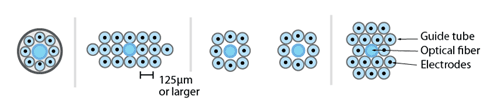

In the flexDrive, electrodes are positioned by an
array of polyimide tubes:

By placing individual guide tube arrays at different locations
within the drive body, multiple brain regions can be targeted precisely. This control gives
researchers the ability to adapt the design to fit their specific experimental needs, such as
recording from elongated but narrow target regions (or from bilateral targets) with a single
implant.
By using only a subset of the guide tubes to hold electrodes, or by introducing placeholders and optical fibers into the array, any spatial pattern of electrode and optical fiber positions can be fabricated with high repeatability and precision.
The closest lateral spacing between electrodes that can be accomplished with this method is dictated by the outer diameter of the guide tubes. We recommend a distance of ~250 μm or larger for the guide tubes (using 33 gauge), but higher densities of ~125 μm are possible by using smaller diameter guide tubes. However, tests conducted with dense electrode arrays of pitches of 125 μm failed to yield usable recordings, possibly due to an increased inflammatory response.